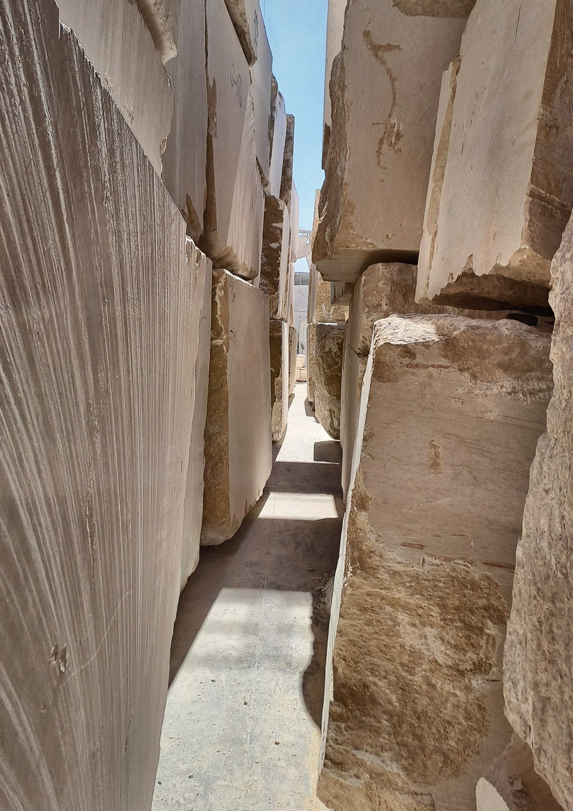
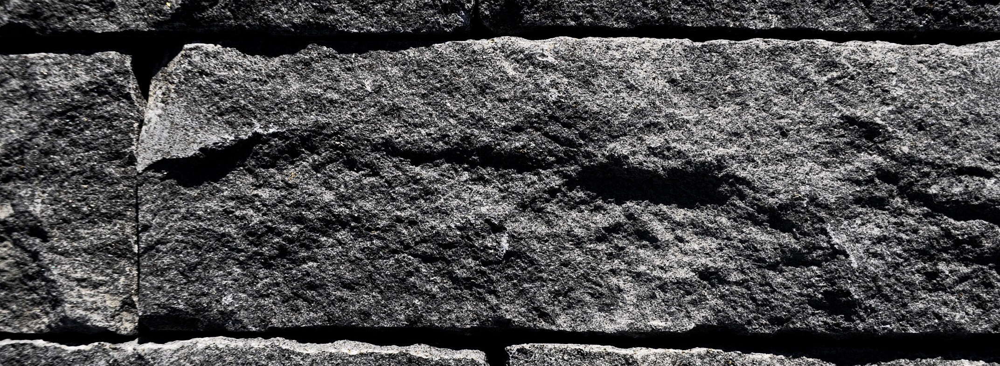
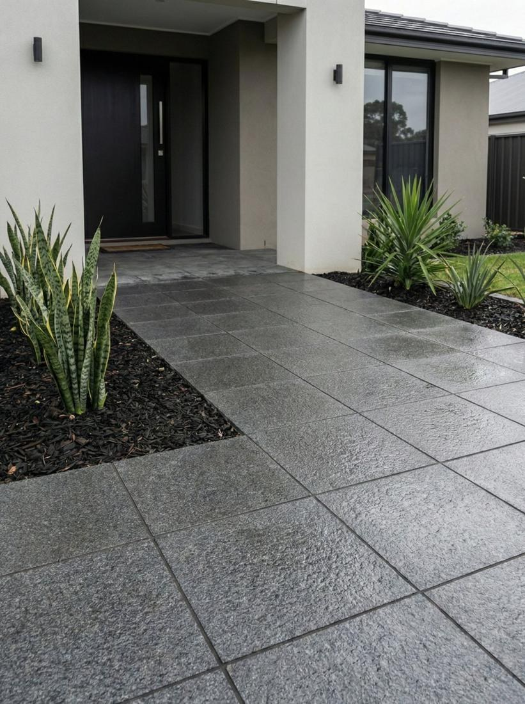

Marbre · Pierre naturelle · Granit · Taille de pierre
Collection
Pierre Naturelle
Marbre, calcaire, granit et pierre de parement, sélectionnés à la carrière et fournis en blocs, tranches et carreaux pour des projets en Grèce et en Europe.
BlocsTranchesCarreauxCoupe sur plan
Koropi · AttiqueLa pierre se choisit avant de se couper.
Pyramidion sélectionne la pierre naturelle à la carrière et la fournit aux architectes, designers, entrepreneurs et importateurs en Grèce et dans toute l'Europe. Marbre, calcaire, basalte et granit, en blocs, tranches, carreaux, parements et pierre sculptée. Chaque lot est contrôlé avant expédition et livré avec ses données techniques.
50+
années d'expérience dans la pierre naturelle6+
pays d'origine, de l'Égypte au Brésil300 × 195
cm, le plus grand format de tranche en stock1 – 20
cm, épaisseur coupée selon le projetLa collection
Quatre familles, une exigence

01
Marbre & Calcaire
Sinai Pearl · Sunny Menia · Sunny Silvia · Galala · Gamme égyptienne
02
Pierre Naturelle
Basalte · Parement irrégulier · Mountain Face · Éclaté
03
Granit
New Halayeb · Gandola · Premium Grey · Gamme granit
04
Extérieurs & Dallage
Marches de jardin · Dallage · Opus incertum · Pavés de basalteIn situ
Trois pierres, trois usages
Visualisations sur textures réelles ; la surface réelle est montrée sur chaque fiche.


Le parc de Koropi, 3e km Leoforos Markopoulou. Sélection des tranches sur rendez-vous.
Colonnes & chapiteaux
Colonnes, pilastres, bases et chapiteaux, sculptés ou tournés d'après vos plans ou copiés d'un original. Colonnes
Balustres & corniches
Trois profils de balustres tournés, des consoles sculptées et huit profils de corniche standard. Profils
Panneaux & mosaïques
Panneaux gravés CNC finis à la main, mosaïques et médaillons assemblés à la main. Panneaux
Sur mesure & sourcing
Toute dimension, toute finition, et des pierres hors gamme repérées à la carrière. Projets sur mesure